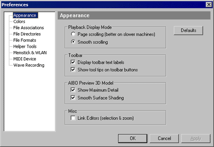
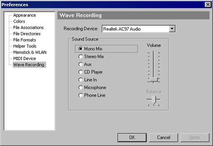

12.0 Setting Preferences
To change the various preferences, from Edit Menu,
select "Preferences".

12.1 Appearance
- Playback
Display Mode. Affects how the editors update during simulated
playback. Smooth scrolling looks
better if you have enough CPU behind it. People with an LCD
display, or a slow CPU, might find page scrolling looks better.
- Toolbar Text Labels. If you don't like
descriptive toolbar labels, turn them off here.
- Toolbar Tool Tips. If you don't like the
pop-up tip messages (giving longer descriptions), turn them off here.
- AIBO Preview 3D Model. Affects the OpenGL
motion editor preview & AIBO window, and controls rendering detail
& shading. If you are having problems with the preview, try
turning one or both off & see if it helps.
- Link Editors. The motion/led/sound
editors selection bars & zooms will be linked, making editing
easier.
12.2 Colors
You can change the colors of most areas of the
editors. The marker colors, highlights, background colors,
motion data, wave data, MIDI notes, LED background, etc...
Other
colors such as toolbar background & frame & window color are
specified by Windows (from the Windows Display Properties Dialog).
AIBO preview colors aren't change here.
Right-click on the preview, and select "Colors" from the pop-up menu.
12.3 File Associations
File associations configure Windows. If you
enable a file type, then double-clicking in Windows Explorer opens
that file in Skitter.
- AIBO Workbooks (*.aib)
- AIBO Action Files (*.act)
- AIBO Motion Files (*.mtn)
- AIBO LED Files (*.led)
- MIDI Sequences (*.mid)
- Wave Sound File (*.wav)
You
might need to right-click MIDI/Wave files from Windows Explorer, and
choose "Edit" from the pop-up menu, even after associating Skitter with
those file types (the pop-up menu "Play" option is usually default in
Windows).
12.4 File Directories
Skitter maintains four directory paths per AIBO
model: Action, Motion, LED, and Sound. By default,
the Motion/LED/Sound directories are relative to the action
file. ie:
.\Motion\
.\LED\
.\Sound\
If you prefer storing everything in one file instead,
use Aibo Workbooks (see next sections).
12.5 File Formats
- AIBO
Action File Format. Skitter can
create AIBO Master Studio Version 1.0 or Version 1.1 compatible action
files (*.act), or the new Aibo Workbook format (recommended).
- Version 1.0 only supports the ERS-210 (compatible
with Master Studio v1.0)
- Version 1.1 supports all AIBO platforms.(compatible
with Master Studio v1.1)
- AIBO Workbooks support all platforms also, but
store everything within a single file (only works with Skitter)
- Always Create Backup Copies. Backup files
can be a life-saver, or an extreme annoyance. Take your pick.
- Allow Background Saves. Skitter performs
background saves (to temporary filenames) periodically. If your
machine crashes for any reason, reopen the file you were editing,
and Skitter should find the recovery files & restore your edits.
12.6 Helper Tools
Command
& arguments for the OdaBuild action compiler & Skitter's Aibo
Mind Manager (SAMM). You
should not need to change these. OdaBuild takes a directory
of actions, and creates the various special files required by
AIBO. SAMM needs a memstick drive & action directory.
12.7 Memstick & WLAN
Specify the memory stick drive & AIBO's wireless LAN
IP address from here.
12.8 MIDI Device
Change
the MIDI output device & instrument used while editing in
Skitter. These fields are NOT used by AIBO. The
default most closely emulates AIBO and is recommended.
12.9 Wave
Recording
Change recording device (sound
card) and selection sound source when recording in Wave Editor.
Typically you'll use either the "Microphone", or an output "Mix"
options. However, the other options might be suitable in
various situations.
The volume indicates how much the recording signals are
amplified. A little goes a long way here.
|

|
|